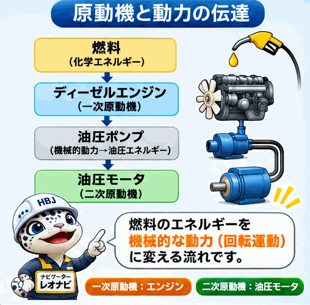

<!doctype html><html lang="ja"><meta charset="utf-8"><meta name="viewport" content="width=device-width,initial-scale=1"><title>エンジン攻略講座</title><style>*{box-sizing:border-box}body{margin:0;background:#eaf3fb;color:#142e50;font-family:Meiryo,sans-serif}main{max-width:650px;margin:auto;padding:14px}a,button{font:inherit}a{color:#164d80}h1{font-size:clamp(24px,6vw,34px)}.card{background:white;border-radius:20px;padding:15px;margin:12px 0;box-shadow:0 4px 16px #16345616}button{border:0;border-radius:12px;background:#164d80;color:white;padding:13px;font-weight:bold;cursor:pointer}button.alt{background:#e0edf8;color:#163456}#menu{display:grid;grid-template-columns:1fr 1fr;gap:8px}#menu button{text-align:left;font-size:14px}#menu button.active{background:#ffd34b;color:#142e50}.screen{background:#d9efff;border-radius:16px;overflow:hidden}svg{display:block;width:100%;height:auto}.talk{display:flex;align-items:center;gap:12px;background:#142e50;color:white;padding:12px;min-height:150px}.talk img{width:90px;height:110px;object-fit:contain;border-radius:12px}.talk p{font-size:clamp(18px,4.8vw,25px);font-weight:bold;margin:6px 0}.talk small{color:#ffda60}#controls{display:flex;gap:8px;flex-wrap:wrap;margin:12px 0}#seek{width:100%}#options button,#eo button{display:block;width:100%;text-align:left;margin:8px 0;background:#edf4fa;color:#142e50}#options button.correct,#eo button.correct{background:#d5efdf;color:#165caa}#options button.wrong,#eo button.wrong{background:#fbd9d9;color:#b72c30}#feedback{font-weight:bold;padding:10px}footer{text-align:center;padding:20px} .entry{display:grid;gap:10px}.entry a{display:block;padding:18px;background:#164d80;color:white;text-decoration:none;border-radius:14px;font-weight:bold}.entry a small{display:block;font-weight:normal;margin-top:6px}.chapter{margin:10px 0}.chapter summary{font-weight:bold;padding:12px;background:#164d80;color:#fff;border-radius:10px;cursor:pointer}.chapter button{display:block;width:100%;text-align:left;margin:5px 0;background:#e0edf8;color:#142e50}.chapter button.active{background:#ffd34b;color:#142e50}#flow{padding:18px;min-height:210px;display:grid;gap:8px;align-content:center}#flow div{background:white;border:2px solid #8db5d6;border-radius:10px;padding:12px;text-align:center;font-weight:bold;transition:background .2s}#flow div.on{background:#ffd34b;border-color:#d49a16}#flow span{text-align:center;color:#24558c}button:disabled{cursor:default;opacity:.85}[hidden]{display:none!important}#lessonVideo video{display:block;width:100%;height:auto;aspect-ratio:4/5;object-fit:contain;border-radius:12px;background:#000}#lessonVideo{overflow-anchor:none}#mp4{scroll-margin-top:12px}#lessonVideo small{display:block;margin:8px 0;color:#536579}[hidden]{display:none!important}</style><main><a href="index.html">← トップページに戻る</a><h1>エンジン攻略講座</h1><p>エンジン博士とレオナビと一緒に、国家試験に必要な知識を身につけよう！</p><div class="card entry"><a href="#shorts">▶ ショート講座で学ぶ<small>全6章・40講座｜動画・図解・要点解説</small></a><a href="#exam">国家試験対策問題に挑戦 →<small>5択58問・解説・復習機能付き</small></a></div><section class="card" id="shorts"><h2>エンジン博士の学習講座</h2><div id="menu2"></div></section><section class="card" id="player"><h2 id="title"></h2><div id="lessonVideo" hidden><video id="mp4" controls playsinline preload="metadata" src="engine-01.mp4"></video><small style="display:block;text-align:right;font-size:10px;color:#788392;line-height:1.4;margin:3px 0 8px">VOICEVOX:ずんだもん</small><h3>図解で復習</h3><a href="engine-01-poster.png" target="_blank" rel="noopener"></a><small>画像をタップすると拡大できます。</small></div><div id="legacyPlayer"><div class="screen"><svg viewBox="0 0 400 440" aria-label="エンジン断面の模式図"><rect width="400" height="440" fill="#eaf6ff"/><text x="20" y="25" fill="#226a9d" font-size="15">吸気</text><text x="330" y="25" fill="#a34d27" font-size="15">排気</text><path d="M35 52H145V85" fill="none" stroke="#378fc8" stroke-width="16"/><path d="M365 52H255V85" fill="none" stroke="#ce7850" stroke-width="16"/><rect x="120" y="75" width="160" height="220" rx="8" fill="#9baec0"/><rect x="130" y="85" width="140" height="200" fill="white"/><rect id="gas" x="131" y="86" width="138" height="50" fill="#b7e5ff"/><g id="iv" stroke="#246eaa" stroke-width="7"><path d="M150 60V95M137 95H163"/></g><g id="ev" stroke="#ad5738" stroke-width="7"><path d="M250 60V95M237 95H263"/></g><path d="M200 45V87" stroke="#536579" stroke-width="10"/><g id="spray" stroke="#ed762b" stroke-width="3"><path d="M200 88L180 108M200 88V110M200 88L220 108"/></g><circle cx="200" cy="340" r="47" fill="#c5d5e3" stroke="#68829c" stroke-width="8"/><line id="crank" x1="200" y1="340" stroke="#dc8b36" stroke-width="12" stroke-linecap="round"/><line id="rod" stroke="#617b92" stroke-width="13" stroke-linecap="round"/><g id="piston"><rect x="132" y="-25" width="136" height="40" rx="5" fill="#aabaca" stroke="#536b82" stroke-width="3"/><path d="M136 -17H264" stroke="#536b82" stroke-width="4"/><circle cx="200" cy="0" r="7" fill="#344e69"/></g><text x="10" y="180" font-size="14" fill="#142e50">ピストン</text><text x="12" y="280" font-size="14" fill="#142e50">連接棒</text><text x="200" y="408" text-anchor="middle" font-size="16" fill="#142e50">クランクシャフト</text><text id="stage" x="200" y="433" text-anchor="middle" font-size="18" font-weight="bold" fill="#b64f20"/></svg><div id="flow"></div><div class="talk"><div><small id="speaker"></small><p id="caption"></p></div></div></div><div id="controls"><button id="play">▶ 再生</button><button id="pause" class="alt">一時停止</button><button id="sound" class="alt">音声：ON</button></div><input id="seek" type="range" min="0" max="20" step="0.1" value="0" aria-label="再生位置"><p id="time"></p><small>模式図・流れ図。音声は端末の日本語読み上げ機能を利用します。</small></div><div id="studyNotes" style="background:#edf4fa;border-radius:12px;padding:14px;margin:16px 0;line-height:1.8"><h3 style="margin:0 0 8px">試験に必要な知識</h3><p id="coreNote"></p><p id="extraNote"></p></div><h3>確認問題</h3><p id="question"></p><div id="options"></div><div id="feedback" aria-live="polite"></div><button id="next">次の講座へ →</button></section><section class="card" id="exam"><h2>国家試験対策・内燃機関 58問</h2><p>国家試験に必要な知識を5択問題で身につけよう。正解だけでなく、その理由まで理解しよう。</p><button id="restart">全問開始</button> <button id="retry" class="alt">間違いだけ復習</button><p id="progress"></p><h3 id="eq"></h3><div id="eo"></div><p id="ef" aria-live="polite"></p><button id="en">次の問題 →</button></section><footer><a href="index.html">トップページに戻る</a></footer></main><script>const data=[["原動機とは何か", "エネルギーを機械的な動力に変える装置じゃ。内燃機関は燃料の燃焼を利用するぞ。", "燃料のエネルギー→内燃機関→機械的動力", "原動機の機能", "エネルギーを機械的動力に変換", "機械的動力を必ず電力に変換", "燃料を貯蔵", "冷却水をろ過", "排気を消音"], ["油圧ポンプと油圧モータの違い", "エンジンは一次原動機。油圧ポンプで油圧エネルギーに変え、油圧モータで回転動力に戻すぞ。", "エンジン（一次原動機）→油圧ポンプ→油圧モータ（二次原動機）", "油圧エネルギーを回転動力に変える装置", "油圧モータ", "内燃機関", "燃料タンク", "ラジエータ", "エアクリーナ"], ["ガソリンエンジンとディーゼルエンジンの違い", "ディーゼルは高温の圧縮空気に燃料を噴射して自己着火。ガソリンは電気火花で着火するぞ。", "圧縮空気→燃料噴射→自己着火", "ディーゼルの着火方式", "圧縮着火", "火花点火", "吸気加熱だけで着火", "冷却水による着火", "燃料だけの圧縮"], ["なぜクレーンにはディーゼルエンジンが使われるのか", "ディーゼルエンジンは低回転でも大きなトルクを得やすく、油圧ポンプの駆動に適している。熱効率が高く、燃料消費率が低い傾向にあり、耐久性にも優れる。一方、頑丈な構造が必要で、重量・騒音・振動が大きい傾向がある。", "低回転でも大きなトルク→油圧ポンプの駆動→重作業に適する", "一般的な熱効率の比較", "ディーゼルの方が高い", "ガソリンの方が高い", "常に同じ", "両方100％", "質量だけで決まる"], ["火災・騒音・始動性", "軽油はガソリンより揮発しにくく、引火点が高いため、一般に火災危険度は低い。ただし軽油も引火するため取扱いには注意が必要。ディーゼルは燃焼時の圧力が高く、騒音・振動が大きい傾向がある。圧縮空気の熱で自己着火するため、寒冷時には必要な温度を得にくく、冬季始動性はやや悪い。", "火災危険度：低い→騒音・振動：大→冬季始動：やや悪い", "ディーゼルの一般的特徴", "冬季始動性がやや悪い", "騒音が小さい", "振動が小さい", "火災危険度が比較上高い", "馬力当たり質量が小さい"], ["ピストンとシリンダ", "シリンダはピストンが往復運動する円筒状の部分。ピストンが上昇すると空気が圧縮され高温になる。ディーゼルでは高温の圧縮空気に燃料を噴射して自己着火させ、燃焼ガスの膨張による圧力でピストンを押し下げ、動力を生み出す。", "空気の圧縮→燃料噴射・自己着火→燃焼ガスの膨張→ピストン下降", "ピストンの運動", "シリンダ内の往復運動", "カム軸と同じ回転運動", "吸気管内の回転", "冷却水の循環", "燃料の噴射"], ["連接棒とクランク軸", "コネクチングロッドがピストンの力を伝え、クランク軸で往復運動を回転運動に変えるぞ。", "ピストン→コネクチングロッド→クランク軸", "往復運動を回転運動に変える軸", "クランク軸", "カム軸", "タービン軸", "ポンプ軸", "車軸"], ["吸気・排気バルブ", "吸気バルブは空気の入口、排気バルブは燃焼ガスの出口。圧縮時は基本的に両方閉じるぞ。", "吸気弁→シリンダ→排気弁", "圧縮行程の弁の状態", "両方閉", "両方開", "吸気のみ開", "排気のみ開", "交互に開く"], ["吸入行程", "吸気弁が開きピストンが下降。ディーゼルは空気を吸い込むんじゃ。", "吸気弁：開→ピストン：下降→空気吸入", "吸入行程の組合せ", "吸気弁開・ピストン下降", "吸気弁開・上昇", "排気弁開・下降", "両弁閉・上昇", "排気弁開・上昇"], ["圧縮行程", "両弁を閉じてピストンが上昇し、空気を圧縮して高温にするぞ。", "両弁：閉→ピストン：上昇→空気温度上昇", "圧縮されるもの", "空気", "軽油のみ", "冷却水", "潤滑油", "排気管"], ["燃焼・膨張行程", "圧縮終期に燃料を噴射すると自己着火し、膨張ガスがピストンを押し下げるぞ。", "燃料噴射→自己着火→ピストン下降", "動力を発生する行程", "燃焼・膨張", "吸入", "圧縮", "排気", "冷却"], ["排気行程", "排気弁が開きピストンが上昇して燃焼ガスを押し出すぞ。", "排気弁：開→ピストン：上昇→排気", "排気行程の組合せ", "排気弁開・上昇", "排気弁開・下降", "吸気弁開・上昇", "両弁閉・下降", "吸気弁開・下降"], ["軸の回転数", "4サイクルの1循環でクランク軸は2回転、カム軸は1回転じゃ。", "4行程→クランク軸720度→カム軸360度", "クランク軸が6回転するとカム軸は何回転か", "3回転", "6回転", "12回転", "2回転", "4回転"], ["2サイクルとの違い", "2サイクルはピストン2行程、クランク軸1回転で1回の動力を発生するぞ。", "2行程→クランク軸1回転→動力1回", "2サイクルでクランク軸4回転時の動力発生回数", "4回", "2回", "1回", "8回", "16回"], ["タイミングギヤ", "クランク軸からカム軸へ回転を伝え、弁の開閉時期を合わせる。噴射時期の制御にも使われるぞ。", "クランク軸→タイミングギヤ→カム軸", "弁の開閉時期を合わせる歯車", "タイミングギヤ", "リングギヤ", "ピニオンのみ", "フライホイール", "ガバナ"], ["フライホイール", "燃焼行程の回転エネルギーを一時的に蓄えて、クランク軸の回転を滑らかにするぞ。", "燃焼行程→回転エネルギー蓄積→回転変動を抑制", "フライホイールの目的", "回転変動を抑える", "噴射量を調節", "電圧を調整", "燃料をろ過", "吸気を加圧"], ["エアクリーナ", "吸入空気のちりやほこりを除去し、シリンダやピストンの摩耗を防ぐぞ。", "外気→エアクリーナ→シリンダ", "エアクリーナが除去するもの", "吸入空気中のほこり", "燃料中の水分", "冷却水中の熱", "排気中の圧力", "電流の変動"], ["燃料供給装置", "機械式ではタンクから供給ポンプ、フィルタ、噴射ポンプ、ノズルの順に燃料を送るぞ。", "タンク→供給ポンプ→フィルタ→噴射ポンプ→ノズル", "燃料フィルタの次の装置", "噴射ポンプ", "タンク", "供給ポンプ", "エアクリーナ", "ラジエータ"], ["燃料供給ポンプ", "タンクの燃料を吸い上げ、燃料フィルタを通して噴射ポンプ側へ送るぞ。", "タンク→供給ポンプ→フィルタ", "供給ポンプの役割", "タンクから燃料を送る", "燃焼室に直接噴射", "回転速度を調節", "吸気を加圧", "発電する"], ["燃料フィルタ", "燃料に混じるごみや水分を除去して、噴射装置を保護するぞ。", "燃料→フィルタ→清浄な燃料", "燃料フィルタの役割", "燃料中の異物や水分を除去", "吸気のほこりを除去", "燃料を高圧噴射", "冷却水を循環", "電圧を調整"], ["燃料噴射ポンプ", "回転数や負荷に応じた量の燃料を高圧にしてノズルへ送る装置じゃ。", "燃料→噴射ポンプ（高圧）→ノズル", "噴射ポンプの機能", "燃料を高圧にして送る", "吸気を圧縮", "燃料中の水分を除去", "冷却水を加圧", "回転エネルギーを蓄積"], ["燃料噴射ノズル", "噴射ポンプから届く高圧燃料を燃焼室内へ噴射するぞ。", "高圧燃料→噴射ノズル→燃焼室", "ノズルの役割", "燃焼室に燃料を噴射", "燃料をタンクへ補充", "電圧を調整", "冷却水を放熱", "カム軸を駆動"], ["ガバナ（調速機）", "負荷の変動に応じて燃料噴射量を調整し、エンジンの回転速度を調節するぞ。", "負荷変動→ガバナ→噴射量調整", "ガバナの調整対象", "燃料噴射量", "冷却水量", "発電電圧", "吸気フィルタの目", "潤滑油の粘度"], ["過給器", "排気ターボ式では排気ガスでタービンを回し、同軸のコンプレッサで吸気を加圧するぞ。", "排気→タービン→コンプレッサ→加圧吸気", "排気ターボ式の駆動源", "排気ガス", "冷却水", "バッテリ", "燃料の液圧", "潤滑油"], ["停止装置", "ディーゼルの停止には燃料供給を遮断する方式が一般的じゃ。吸気を止める方式もあるぞ。", "停止操作→燃料遮断→燃焼停止", "一般的な停止方式", "燃料供給の遮断", "点火プラグの火花停止", "冷却水排出", "潤滑油排出", "発電電圧上昇"], ["潤滑油の循環", "オイルパンにたまった油を潤滑油ポンプで各摩擦部分へ送り、摩耗や焼付きを防ぐぞ。", "オイルパン→潤滑油ポンプ→摩擦部分", "潤滑油を各部へ送る装置", "潤滑油ポンプ", "燃料供給ポンプ", "ウォータポンプ", "噴射ノズル", "ガバナ"], ["オイルの5作用", "潤滑、冷却、密封、腐食防止、洗浄。この5つがエンジンオイルの作用じゃ。", "潤滑・冷却→密封・腐食防止→洗浄", "オイルの作用でないもの", "電気火花による点火", "密封", "洗浄", "冷却", "腐食防止"], ["水冷式冷却装置", "ウォータジャケットで熱を受けた冷却水をラジエータで冷やし、ポンプで循環させるぞ。", "ウォータジャケット→ラジエータ→ウォータポンプ", "冷却水を放熱する装置", "ラジエータ", "ガバナ", "噴射ノズル", "オイルパン", "スタータ"], ["ラジエータとウォータジャケット", "ウォータジャケットはシリンダ周囲で熱を受け、ラジエータは冷却水の熱を外気へ逃がすぞ。", "シリンダの熱→冷却水→外気", "シリンダ周囲の冷却水通路", "ウォータジャケット", "燃料フィルタ", "クランクケース", "吸気マニホールド", "リングギヤ"], ["ポンプとサーモスタット", "ウォータポンプは冷却水を循環させ、サーモスタットは水温に応じて流路を調節するぞ。", "ポンプ：循環→サーモスタット：流路調節", "水温に応じて流路を調節する部品", "サーモスタット", "ガバナ", "レギュレータ", "オルタネータ", "フライホイール"], ["バッテリと24V", "12ボルトのバッテリ2個を直列につなぐと24ボルト。スタータなどの電源になるぞ。", "12V→直列接続→24V", "12Vバッテリ2個の直列電圧", "24V", "12V", "6V", "36V", "48V"], ["スターティングモータ", "始動時はピニオンがフライホイールのリングギヤとかみ合い、クランク軸を回すぞ。", "バッテリ→スタータ→リングギヤ", "ピニオンがかみ合う部品", "リングギヤ", "カム", "燃料フィルタ", "ラジエータ", "サーモスタット"], ["オルタネータ", "エンジンの回転で交流を発生し、整流して直流を供給する発電機じゃ。", "エンジン回転→交流発電→整流・直流", "オルタネータの発電方式", "交流を発生し整流する", "直流を交流にして供給", "燃料を燃焼室へ噴射", "冷却水で発電", "バッテリを機械的に回転"], ["レギュレータ", "発電電圧を制御して、各電気装置に適正な電力を供給するぞ。", "発電→電圧調整→電気装置", "レギュレータの制御対象", "発電電圧", "燃料噴射量", "冷却水温", "吸気圧", "油圧"], ["始動補助装置", "寒冷時はグロープラグで燃焼室側を、電熱式エアヒータで吸気を加熱し、着火を助けるぞ。", "低温→予熱→始動補助", "電熱式エアヒータの加熱対象", "吸入空気", "冷却水のみ", "排気ガス", "燃料タンク", "潤滑油のみ"], ["始動前点検", "オイル、冷却水、燃料の量と、ファンベルトの緩みや損傷、汚れを確認するぞ。", "油量・水量→燃料量→ベルト", "始動前に確認する組合せ", "液量とファンベルト", "排気色と運転時水温のみ", "充電状態と排気色のみ", "キー保管のみ", "運転中の油圧のみ"], ["アイドリング時点検", "油圧警告、異音、排気色、冷却水・燃料・オイルの漏れを確認するぞ。", "油圧→異音・排気色→液漏れ", "アイドリング時の点検", "排気色と液漏れ", "キーの保管", "不凍液の全量交換", "ベルト取り外し", "燃料タンク分解"], ["運転時点検", "油圧、冷却水温、充電状態、エンジンの異音を確認するんじゃ。", "油圧→水温・充電→異音", "運転時に確認する組合せ", "油圧・水温・充電状態・異音", "キー保管と燃料補充のみ", "液面とベルトのみ", "バッテリ取り外し", "燃料噴射装置分解"], ["作業終了時点検", "エンジン停止後はキーを外して保管し、燃料残量を確認して必要に応じ補充するぞ。", "停止→キー保管→燃料残量確認", "作業終了時の点検", "キー保管と燃料残量確認", "運転中の油圧のみ", "始動時の噴射量調整", "排気弁分解", "冷却水全量排出"], ["寒冷時とバッテリ管理", "低温ではバッテリ容量が低下する。液面管理型は上下限を守り、端子の汚れや短絡にも注意じゃ。", "低温→容量低下→保温・管理", "低温時のバッテリ容量", "低下する", "必ず増加する", "常に一定", "2倍になる", "電圧と無関係に無限になる"]];const bank=[["内燃機関", "ディーゼルエンジンの着火方式として正しいものは？", ["圧縮した高温の空気に燃料を噴射し自己着火させる", "混合気を電気火花で着火する", "燃料だけを圧縮して着火する", "吸入時に軽油を電気火花で着火する", "冷却水の熱で燃料を着火する"], "ディーゼルは圧縮着火、ガソリンは火花点火が基本。"], ["内燃機関", "一般的な比較における熱効率の組合せは？", ["ディーゼル30～40％、ガソリン22～28％", "ディーゼル22～28％、ガソリン30～40％", "両方22～28％", "両方30～40％", "ディーゼル10～20％、ガソリン40～50％"], "一般的な比較ではディーゼルの熱効率が高い。実機の値は機種による。"], ["内燃機関", "一般的なディーゼルとガソリンの比較で正しいものは？", ["ディーゼルは馬力当たりの質量が大きく、騒音・振動も大きい", "ディーゼルは質量が小さく騒音も小さい", "ディーゼルは冬季始動性が良い", "ガソリンの方が燃料費が安いと参考書は示す", "ディーゼルの火災危険度は比較上高い"], "一般的な比較ではディーゼルは重く、騒音・振動が大きく、冬季始動性はやや悪いと比較している。"], ["作動", "4サイクル機関の1循環における軸の回転数は？", ["クランク軸2回転、カム軸1回転", "クランク軸1回転、カム軸2回転", "両軸1回転", "両軸2回転", "クランク軸4回転、カム軸2回転"], "4行程でクランク軸720度、カム軸360度。"], ["作動", "2サイクルディーゼル機関の1循環は？", ["ピストン2行程、クランク軸1回転", "ピストン4行程、クランク軸1回転", "ピストン2行程、クランク軸2回転", "ピストン4行程、クランク軸2回転", "ピストン1行程、クランク軸1回転"], "2サイクルは2行程で1回の動力発生。"], ["作動", "圧縮行程の組合せとして正しいものは？（模式的な開閉）", ["ピストン上昇、両バルブ閉", "ピストン下降、両バルブ閉", "ピストン上昇、吸気弁開", "ピストン下降、排気弁開", "ピストン上昇、排気弁開"], "空気を閉じ込めて圧縮し温度を上げる。"], ["作動", "吸入行程と排気行程のピストンの動きは？", ["吸入で下降、排気で上昇", "両方上昇", "両方下降", "吸入で上昇、排気で下降", "吸入で停止、排気で下降"], "吸入では容積が増え、排気では容積が減る。"], ["構造", "バルブを開閉する機構の動力伝達として正しいものは？", ["クランク軸からタイミングギヤを介してカム軸へ伝える", "フライホイールから冷却水を介して伝える", "燃料噴射ノズルが直接バルブを押す", "オルタネータがカム軸を駆動する", "ガバナが直接排気弁を開く"], "カムの動きがプッシュロッド、ロッカーアーム等を介して伝わる形式がある。"], ["構造", "フライホイールの主な役割は？", ["回転エネルギーを蓄え、クランク軸の回転を滑らかにする", "燃料噴射圧力を高める", "吸気をろ過する", "冷却水を循環させる", "電圧を調整する"], "燃焼行程で得たエネルギーを一時的に蓄え回転変動を抑える。"], ["燃料供給", "燃料の供給経路として正しいものは？", ["タンク→供給ポンプ→フィルタ→噴射ポンプ→噴射ノズル", "タンク→噴射ノズル→フィルタ→噴射ポンプ", "タンク→噴射ポンプ→供給ポンプ→フィルタ", "タンク→エアクリーナ→噴射ノズル", "タンク→ラジエータ→噴射ポンプ"], "機械式燃料供給装置の模式的な経路。"], ["燃料供給", "ガバナの役割は？", ["負荷変動に応じ燃料噴射量を調整して回転速度を調節する", "燃料の水分を除去する", "噴射ノズルで燃料を霧化する", "冷却水温を調節する", "発電電圧を調節する"], "ガバナは調速機。負荷変動による回転速度の変化を抑える。"], ["燃料供給", "燃料フィルタの役割は？", ["燃料中のごみや水分を除去する", "吸入空気のほこりを除去する", "排気でタービンを回す", "燃料を高圧噴射する", "回転速度を調節する"], "燃料フィルタとエアクリーナを区別する。"], ["燃料供給", "噴射ポンプと噴射ノズルの役割の組合せは？", ["ポンプは燃料を高圧で送り、ノズルは燃焼室へ噴射する", "ポンプは空気をろ過し、ノズルは冷却する", "ポンプは電圧調整、ノズルは発電", "ポンプは排気を圧縮、ノズルは吸気をろ過", "ポンプは燃焼室へ直接噴射し、ノズルは燃料を貯蔵"], "機械式では噴射ポンプが高圧燃料を送り、ノズルが噴射する。"], ["過給・潤滑", "排気ターボ式過給機の動力源は？", ["排気ガスによって回るタービン", "冷却水の流れ", "バッテリの直流電力", "燃料供給ポンプ", "フライホイールの歯車のみ"], "タービンとコンプレッサが連動し吸気を加圧する。"], ["過給・潤滑", "エンジンオイルの作用に含まれないものは？", ["燃料への電気火花による点火", "潤滑", "冷却", "密封", "洗浄"], "潤滑・冷却・密封・腐食防止・洗浄を挙げている。"], ["過給・潤滑", "エンジン停止装置の一般的な方式は？", ["燃料供給を遮断する", "冷却水を全量排出する", "潤滑油を抜く", "発電電圧を上げる", "吸気フィルタを外す"], "一般的な比較では燃料遮断方式と吸気停止方式を紹介し、燃料遮断が一般的としている。"], ["冷却", "水冷式装置の組合せとして正しいものは？", ["ウォータポンプで循環、ラジエータで放熱", "ラジエータで循環、ガバナで放熱", "オルタネータで循環、噴射ノズルで放熱", "サーモスタットで発電、ポンプで点火", "燃料ポンプで循環、フライホイールで放熱"], "ウォータジャケットで熱を受け、ラジエータで放熱する。"], ["電気装置", "スタータのピニオンが始動時にかみ合う部品は？", ["フライホイールのリングギヤ", "燃料フィルタ", "ラジエータ", "噴射ノズル", "ウォータジャケット"], "スタータでクランク軸を回し、始動後はピニオンが離れる。"], ["電気装置", "オルタネータとレギュレータの役割は？", ["発電と電圧調整", "燃料噴射と回転調整", "冷却と潤滑", "吸気と排気", "点火と燃料ろ過"], "オルタネータは交流を発生させ整流して直流を供給し、レギュレータは電圧を調整する。"], ["電気装置", "寒冷時の始動補助装置は？", ["グロープラグや電熱式エアヒータ", "フライホイールやガバナ", "ラジエータや燃料フィルタ", "レギュレータやタイミングギヤ", "オイルパンや排気弁"], "燃焼室や吸入空気を加熱して着火を助ける。"], ["点検", "始動前の点検項目として適切な組合せは？", ["オイル量、冷却水量、燃料量、ファンベルト", "排気色、運転中の冷却水温、充電状態のみ", "排気色と運転中の異音のみ", "作業終了後のキー保管のみ", "運転中の油圧のみ"], "始動前に液量とベルトの緩み・損傷等を確認する。"], ["点検", "アイドリング時に確認する項目は？", ["油圧、異音、排気色、液漏れ", "キーの保管のみ", "燃料噴射ポンプの分解", "冷却水の全量交換", "バッテリの取り外し"], "アイドリング時は油圧警告、異音、排気色、冷却水・燃料・オイル漏れを確認する。"], ["点検", "寒冷時のバッテリについて正しいものは？", ["低温では容量が低下する", "低温では容量が必ず増加する", "低温では端子の短絡が推奨される", "液面は上限を超えるようにする", "冷却水に不凍液を入れてはいけない"], "低温で容量は低下する。液面管理が必要な型では上下限を守り、端子短絡を避ける。"], ["点検", "運転時の点検項目として適切なものは？", ["油圧、冷却水温、充電状態、異音", "キーの取り外しのみ", "ファンベルトを運転中に手で調整する", "燃料噴射ノズルを外す", "冷却水を運転中に全量排出する"], "運転中は計器や異音などで異常を確認する。"], ["構造", "エアクリーナの目的は？", ["吸入空気中のほこりを除去しシリンダ等の摩耗を抑える", "燃料中の水分を除去する", "排気ガスを圧縮する", "潤滑油を加圧する", "冷却水温を調整する"], "吸入空気を清浄にする装置。"], ["構造", "クランク軸の役割は？", ["連接棒を介してピストンの往復運動を回転運動に変える", "回転運動を電圧に変える", "燃料をろ過する", "吸入空気を加熱する", "冷却水を貯蔵する"], "コネクティングロッドを介して力を伝達する。"], ["内燃機関", "油圧式移動式クレーンの動力変換として適切なものは？", ["内燃機関の機械的動力を油圧装置で油圧エネルギーに変える", "油圧装置が燃料を直接燃焼させる", "内燃機関は油圧エネルギーだけを発生する", "油圧装置は電気火花で動力を作る", "冷却装置が主動力を発生する"], "内燃機関が一次動力を発生し、油圧装置を介して作業機構を動かす。"], ["回転数", "4サイクルでクランク軸が10回転したとき、1気筒の動力発生回数は？", ["5回", "10回", "20回", "2回", "40回"], "1循環につきクランク軸2回転、動力発生1回。"], ["回転数", "4サイクルでカム軸が4回転したとき、ピストンの行程数は？", ["16行程", "4行程", "8行程", "32行程", "2行程"], "カム軸1回転につき4行程。"], ["燃料", "機械式燃料供給装置で、噴射ノズルの直前に高圧燃料を供給する装置は？", ["噴射ポンプ", "供給ポンプ", "燃料タンク", "エアクリーナ", "燃料フィルタ"], "噴射ポンプが高圧燃料をノズルへ送る。"], ["燃料", "負荷変動に伴う回転速度の変化を抑える装置と発電電圧を調整する装置の組合せは？", ["ガバナ・レギュレータ", "レギュレータ・ガバナ", "ガバナ・サーモスタット", "フライホイール・ガバナ", "サーモスタット・レギュレータ"], "調速と電圧調整を区別する。"], ["冷却", "冷却水の循環と温度に応じた流路調節を行う装置の組合せは？", ["ウォータポンプ・サーモスタット", "サーモスタット・ウォータポンプ", "ラジエータ・ガバナ", "オイルポンプ・レギュレータ", "ガバナ・ラジエータ"], "ポンプは循環、サーモスタットは流路調節。"], ["潤滑", "エンジンオイルの作用のみを組み合わせたものは？", ["密封・洗浄・腐食防止", "密封・発電・洗浄", "冷却・点火・潤滑", "噴射・冷却・洗浄", "調速・密封・潤滑"], "5作用は潤滑、冷却、密封、腐食防止、洗浄。"], ["電気", "始動後のスタータのピニオンの状態は？", ["リングギヤとのかみ合いが外れる", "常時かみ合う", "カム軸とかみ合う", "発電機に切り替わる", "燃料噴射を制御する"], "始動後はかみ合いが外れ元の位置に戻る。"], ["電気", "12Vバッテリ2個を直列にした場合、各電池の電圧と合計電圧は？", ["各12V・合計24V", "各24V・合計48V", "各6V・合計12V", "各12V・合計12V", "各24V・合計24V"], "直列では各電池の電圧を加算する。"], ["点検", "排気色と冷却水温の主な点検時期の組合せは？", ["アイドリング時・運転時", "始動前・作業終了時", "作業終了時・始動前", "寒冷時のみ・始動前", "始動前・寒冷時のみ"], "排気色はアイドリング時、水温は運転時に確認。"], ["点検", "液面管理型バッテリの適切な液面は？", ["上限と下限の間", "上限より上", "下限より下", "常に空", "端子より上"], "指定範囲内に維持する。"], ["比較", "一般的なディーゼルとガソリンの比較として正しい組合せは？", ["ディーゼルは熱効率が高く馬力当たり質量が大きい", "ディーゼルは熱効率が低く質量が小さい", "ディーゼルは熱効率が高く騒音が小さい", "ガソリンは熱効率が高く冬季始動性が悪い", "両者の特徴はすべて同じ"], "一般的な比較でディーゼルは熱効率が高く重い。"], ["過給", "排気ターボ式で吸入空気を加圧する部品は？", ["コンプレッサ", "タービンそのもの", "ガバナ", "燃料噴射ポンプ", "ラジエータ"], "排気でタービンを駆動し同軸のコンプレッサが吸気を加圧する。"], ["原動機", "油圧ポンプと油圧モータの役割の組合せで正しいものは？", ["ポンプ：機械的動力から油圧、モータ：油圧から回転動力", "両方とも燃料を燃焼", "ポンプ：油圧から回転、モータ：回転から油圧", "両方とも電圧調整", "モータ：燃料供給"], "油圧ポンプは機械的動力を油圧エネルギーへ、油圧モータは油圧エネルギーを回転動力へ変換する。油圧シリンダは直線運動を生む。"], ["比較", "従来型ガソリン機関の着火に用いる部品は？", ["スパークプラグ", "噴射ノズルのみ", "ガバナ", "ラジエータ", "ウォータポンプ"], "ディーゼルの燃料は軽油・重油、ガソリン機関はガソリン。重油は主に船舶などに用いられる。従来型ガソリン機関ではキャブレタとスパークプラグ、ディーゼルでは噴射ポンプと噴射ノズルを用いる。"], ["比較", "参考書の一般的な比較でディーゼルの馬力当たり価格と運転経費は？", ["価格は高く、運転経費は低い", "両方高い", "両方低い", "価格は低く経費は高い", "必ず同じ"], "トルクとは回転軸まわりの力のモーメントで、単位はN・m（ニュートンメートル）。参考書の一般的な比較ではディーゼルは馬力当たりの価格も高いが、運転経費は低い。実機の値は機種による。"], ["構造", "ディーゼル機関でピストンを押し下げて動力を生み出すのは？", ["燃焼ガスの膨張による圧力", "冷却水の圧力", "吸気の負圧", "燃料タンク内の圧力", "排気管内の負圧"], "燃焼ガスが膨張し、その圧力でピストンを押し下げることで動力が生まれる。"], ["動弁", "代表的な動弁機構で弁を閉じる力を生む部品は？", ["バルブスプリング", "ガバナ", "噴射ノズル", "ピニオン", "オイルパン"], "インテークバルブは吸気弁、エキゾーストバルブは排気弁。代表的な動弁機構ではカムの動きをプッシュロッド、ロッカーアームで弁へ伝え、ばねで弁を閉じる。"], ["動弁", "カムの動きを弁に伝える部品の組合せは？", ["プッシュロッド・ロッカーアーム", "ラジエータ・ウォータポンプ", "ピニオン・燃料フィルタ", "ガバナ・レギュレータ", "オイルパン・燃料タンク"], "インテークバルブは吸気弁、エキゾーストバルブは排気弁。代表的な動弁機構ではカムの動きをプッシュロッド、ロッカーアームで弁へ伝え、ばねで弁を閉じる。"], ["作動", "掃気の説明として正しいものは？", ["新しい空気で燃焼後のガスを追い出す", "潤滑油を抜く", "燃料をろ過する", "冷却水を補給する", "電圧を調整する"], "掃気とは燃焼後のガスを新しい空気で追い出すこと。"], ["構造", "フライホイールの代表的な取付位置は？", ["クランク軸端", "燃料タンク内", "ラジエータ内", "吸気弁の先端", "バッテリ端子"], "フライホイールはクランク軸端に取り付ける円盤状の部品。"], ["燃料", "オートタイマが調整するものは？", ["燃料噴射時期", "冷却水量", "発電電圧", "油面", "ベルト張力"], "インジェクションポンプとも呼ぶ。オートタイマは回転速度などに応じて噴射時期を調整する。電子制御式では噴射量や時期を制御し、排出ガスの低減を図る。"], ["燃料", "フィードポンプの別名は？", ["燃料供給ポンプ", "潤滑油ポンプ", "ウォータポンプ", "油圧モータ", "オルタネータ"], "フィードポンプとも呼ぶ。"], ["過給", "機械式過給器の駆動源として適切なものは？", ["クランク軸の動力", "冷却水の熱", "バッテリ液", "燃料タンクの重さ", "排気色"], "過給により吸入空気量を増やし出力を高める。機械式過給器はクランク軸から動力を得る。2サイクル機関では掃気にも空気供給が必要となる。"], ["停止", "燃料遮断式停止装置に用いられるものは？", ["ストップモータ", "ラジエータ", "冷却フィン", "フライホイールのみ", "エアクリーナ"], "燃料遮断にはストップモータやソレノイドバルブなどを用いる方式がある。"], ["潤滑", "エンジン内部で潤滑を必要とする組合せは？", ["軸受・ピストンリング・シリンダ壁", "燃料タンク外面・座席・窓", "バッテリ端子・電線・窓", "ラジエータ外面・タイヤ・座席", "排気口・窓・灯火"], "軸受（ベアリング）、ピストンリング、シリンダ壁などを潤滑し、摩擦損失を減らす。"], ["冷却", "空冷式で放熱面積を増やす部品は？", ["冷却フィン", "噴射ノズル", "ガバナ", "ピニオン", "レギュレータ"], "空冷式は冷却フィンなどから外気へ放熱する。移動式クレーンでは主に水冷式が用いられる。"], ["始動", "ディーゼルの始動に大きなトルクが必要な理由は？", ["高い圧縮圧力に抗して回転させるため", "火花を強くするため", "冷却水を沸騰させるため", "排気をろ過するため", "発電電圧をゼロにするため"], "ディーゼルは圧縮着火なので火花点火装置を必要としない。高い圧縮圧力に抗して始動するため大きなトルクが必要。電気装置は始動、充電などを担う。"], ["電気", "ベルト駆動式オルタネータの動力源は？", ["エンジンの回転", "冷却水の静圧", "バッテリ液の流れ", "燃料の重力", "吸気の温度"], "ベルトで駆動される方式がある。"], ["予熱", "副室式ディーゼルのグロープラグの役割は？", ["副室を予熱して始動を助ける", "常時火花点火する", "冷却水をろ過する", "電圧を調整する", "燃料を貯蔵する"], "グロープラグは発熱部で燃焼室側（副室式では副室）を加熱する。直接噴射式では電熱式エアヒータで吸気を予熱する方式がある。"], ["点検", "寒冷時の冷却水管理として適切なものは？", ["機種指定の不凍液を使用する", "常に真水だけにする", "熱い状態でキャップを開ける", "冷却水を常時抜く", "潤滑油で代用する"], "寒冷時は指定の不凍液を使用し、必要に応じバッテリを保温する。液面管理型は指定の補給液を用い、端子の清掃・締付けを行う。工具で端子間を短絡させない。取り外しや保管は取扱説明書に従う。"], ["点検", "バッテリ端子の点検で適切なものは？", ["汚れや緩みを確認し工具による短絡を避ける", "工具で両端子を接続する", "液面を必ず上限以上にする", "端子を常に緩めておく", "汚れを放置する"], "寒冷時は指定の不凍液を使用し、必要に応じバッテリを保温する。液面管理型は指定の補給液を用い、端子の清掃・締付けを行う。工具で端子間を短絡させない。取り外しや保管は取扱説明書に従う。"]];const supplement={"1": "原動機には内燃機関のほか、電動機や蒸気機関もある。", "2": "油圧ポンプは機械的動力を油圧エネルギーへ、油圧モータは油圧エネルギーを回転動力へ変換する。油圧シリンダは直線運動を生む。", "3": "ディーゼルの燃料は軽油・重油、ガソリン機関はガソリン。重油は主に船舶などに用いられる。従来型ガソリン機関ではキャブレタとスパークプラグ、ディーゼルでは噴射ポンプと噴射ノズルを用いる。", "4": "トルクとは回転軸まわりの力のモーメントで、単位はN・m（ニュートンメートル）。参考書の一般的な比較ではディーゼルは馬力当たりの価格も高いが、運転経費は低い。実機の値は機種による。", "8": "インテークバルブは吸気弁、エキゾーストバルブは排気弁。代表的な動弁機構ではカムの動きをプッシュロッド、ロッカーアームで弁へ伝え、ばねで弁を閉じる。", "9": "移動式クレーンでは主に4サイクルディーゼル機関が使われる。", "14": "掃気とは燃焼後のガスを新しい空気で追い出すこと。", "15": "タイミングギヤのかみ合いによってカム軸などの回転位相を合わせる。", "16": "フライホイールはクランク軸端に取り付ける円盤状の部品。", "19": "フィードポンプとも呼ぶ。", "20": "フューエルフィルタとも呼ぶ。", "21": "インジェクションポンプとも呼ぶ。オートタイマは回転速度などに応じて噴射時期を調整する。電子制御式では噴射量や時期を制御し、排出ガスの低減を図る。", "22": "インジェクションノズルとも呼ぶ。", "24": "過給により吸入空気量を増やし出力を高める。機械式過給器はクランク軸から動力を得る。2サイクル機関では掃気にも空気供給が必要となる。", "25": "燃料遮断にはストップモータやソレノイドバルブなどを用いる方式がある。", "26": "軸受（ベアリング）、ピストンリング、シリンダ壁などを潤滑し、摩擦損失を減らす。", "28": "空冷式は冷却フィンなどから外気へ放熱する。移動式クレーンでは主に水冷式が用いられる。", "31": "ディーゼルは圧縮着火なので火花点火装置を必要としない。高い圧縮圧力に抗して始動するため大きなトルクが必要。電気装置は始動、充電などを担う。", "32": "スタータはモータ部とピニオン部からなり、始動後はピニオンがリングギヤから離れる。", "33": "ベルトで駆動される方式がある。", "35": "グロープラグは発熱部で燃焼室側（副室式では副室）を加熱する。直接噴射式では電熱式エアヒータで吸気を予熱する方式がある。", "36": "油量計・燃料計などで量を確認し、必要に応じ補充する。冷却水は冷間時に確認する。ベルトの調整は機種の指定に従う。", "39": "機種の手順に従ってメインスイッチを切る。", "40": "寒冷時は指定の不凍液を使用し、必要に応じバッテリを保温する。液面管理型は指定の補給液を用い、端子の清掃・締付けを行う。工具で端子間を短絡させない。取り外しや保管は取扱説明書に従う。"};const $=id=>document.getElementById(id);let i=0,t=0,playing=false,last=0,scene=-1,sound=true,raf;const synth=window.speechSynthesis;function stop(){if(synth)synth.cancel()}function say(v,s){stop();if(!sound||!playing||!synth)return;let u=new SpeechSynthesisUtterance(v);u.lang='ja-JP';u.rate=1.1;u.pitch=s===0?1.2:.85;synth.speak(u)}function render(){let s=t<3?0:t<17?1:2;let d=data[i];if(s!==scene){scene=s;let v=s===0?d[0]+'を教えて！':s===1?d[1]:d[2].replaceAll('→',' ／ ');$('caption').textContent=v;$('speaker').textContent=s===0?'レオナビ':s===1?'エンジン博士':'重要ポイント';$('face').src=s===0?'leonavi.png':'engine-professor.png';if(s<2)say(v,s)}let nodes=$('flow').querySelectorAll('div');nodes.forEach((n,j)=>n.classList.toggle('on',j===Math.min(nodes.length-1,Math.floor(t/20*nodes.length))));let angle=i>=8&&i<=11?(i-8+Math.min(.999,t/20))*Math.PI:t/20*4*Math.PI;let stage=Math.floor(angle/Math.PI)%4,r=40,L=145,x=200+r*Math.sin(angle),y=340-r*Math.cos(angle),p=y-Math.sqrt(L*L-(x-200)**2);$('piston').setAttribute('transform',`translate(0 ${p})`);for(let [id,x1,y1,x2,y2] of [['rod',200,p,x,y],['crank',200,340,x,y]])for(let [k,v] of Object.entries({x1,y1,x2,y2}))$(id).setAttribute(k,v);$('gas').setAttribute('height',Math.max(0,p-25-86));$('gas').setAttribute('fill',['#b7e5ff','#83c3f2','#ffbf70','#c8cdd3'][stage]);$('iv').setAttribute('transform',`translate(0 ${stage===0?12:0})`);$('ev').setAttribute('transform',`translate(0 ${stage===3?12:0})`);$('spray').style.opacity=stage===2&&angle%Math.PI<.8?1:0;$('stage').textContent=['吸入','圧縮','燃焼・膨張','排気'][stage];$('seek').value=t;$('time').textContent=`${Math.floor(t)} / 20 秒`}function pause(){playing=false;cancelAnimationFrame(raf);stop();$('play').textContent='▶ 再生'}function tick(ms){if(!playing)return;if(last)t=Math.min(20,t+(ms-last)/1000);last=ms;render();if(t>=20){pause();return}raf=requestAnimationFrame(tick)}function select(n){pause();$('mp4').pause();$('mp4').currentTime=0;const hasVideo=n>=0&&n<6;$('lessonVideo').hidden=!hasVideo;$('legacyPlayer').hidden=hasVideo;if(hasVideo){const base=['engine-01','engine-02','engine-03','engine-04','engine-05','engine-06'][n];const video=$('mp4');$('lessonVideo').querySelector('small').textContent=n>=3?'VOICEVOX:ずんだもん、陸':'VOICEVOX:ずんだもん';if(video.getAttribute('src')!==base+'.mp4'){video.src=base+'.mp4';video.load();}video.style.aspectRatio=n>=3?'4 / 5':'auto 4 / 5';const poster=$('lessonVideo').querySelector('a');poster.href=base+'-poster.png';const image=poster.querySelector('img');image.src=base+'-poster.png';image.alt=['原動機と動力の伝達：一次原動機と二次原動機','油圧ポンプと油圧モータの違い','ガソリンエンジンとディーゼルエンジンの違い','クレーンを動かすディーゼルの力','ディーゼルとガソリンの火災危険度・騒音・振動・冬季始動性','ピストンとシリンダの働き'][n];}i=n;t=0;scene=-1;let d=data[i];$('title').textContent=`第${i+1}話　${d[0]}`;document.querySelectorAll('#menu2 button').forEach((b,j)=>b.classList.toggle('active',i===j));let piston=i>=5&&i<=11;document.querySelector('.screen svg').style.display=piston?'block':'none';$('flow').hidden=piston;$('flow').replaceChildren();d[2].split('→').forEach((v,j)=>{if(j){let a=document.createElement('span');a.textContent='↓';$('flow').append(a)}let a=document.createElement('div');a.textContent=v;$('flow').append(a)});$('coreNote').textContent=d[1];$('extraNote').textContent=supplement[i+1]||'';$('extraNote').hidden=!supplement[i+1];$('question').textContent=d[3].endsWith('か')?d[3]+'。':d[3]+'はどれか。';$('options').replaceChildren();$('feedback').textContent='';shuffle(d.slice(4).map((v,j)=>[v,j])).forEach(([v,j])=>{let b=document.createElement('button');b.textContent=v;b.dataset.correct=j===0;b.onclick=()=>{for(let el of $('options').children){el.disabled=true;if(el.dataset.correct==='true')el.classList.add('correct');else if(el===b)el.classList.add('wrong')}$('feedback').textContent=(j===0?'正解！ ':'不正解。正解：'+d[4]+'。 ')+d[1]};$('options').append(b)});render()}let chapters=['内燃機関の基礎','エンジンの作動原理','燃料供給装置と吸気装置','潤滑装置と冷却装置','電気装置と始動装置','エンジンの点検'],bounds=[0,5,16,25,30,35,40];chapters.forEach((c,k)=>{let el=document.createElement('details');el.className='chapter';el.open=k===0;let s=document.createElement('summary');s.textContent=`第${k+1}章　${c}`;el.append(s);for(let j=bounds[k];j<bounds[k+1];j++){let b=document.createElement('button');b.className='alt';b.textContent=`${j+1}. ${data[j][0]}`;b.onclick=()=>{select(j);$('player').scrollIntoView({behavior:'smooth'})};el.append(b)}$('menu2').append(el)});$('play').onclick=()=>{if(playing)return;if(t>=20)t=0;playing=true;last=0;scene=-1;render();$('play').textContent='再生中';raf=requestAnimationFrame(tick)};$('pause').onclick=pause;$('sound').onclick=()=>{sound=!sound;$('sound').textContent='音声：'+(sound?'ON':'OFF');if(!sound)stop();else{scene=-1;render()}};$('seek').oninput=e=>{t=+e.target.value;scene=-1;render()};$('next').onclick=()=>{select((i+1)%data.length);document.querySelectorAll('.chapter').forEach((el,k)=>el.open=i>=bounds[k]&&i<bounds[k+1]);if(i<6){const v=$('mp4');v.scrollIntoView({behavior:'instant',block:'start'});v.play().catch(()=>{});}else{$('player').scrollIntoView({behavior:'instant',block:'start'})}};document.addEventListener('visibilitychange',()=>{if(document.hidden){pause();$('mp4').pause()}});let order=[],pos=0,score=0,miss=[],answered=false;function shuffle(a){return a.map(v=>[Math.random(),v]).sort((a,b)=>a[0]-b[0]).map(v=>v[1])}function start(ids){order=shuffle(ids);pos=0;score=0;miss=[];showExam()}function showExam(){answered=false;$('eo').replaceChildren();$('ef').textContent='';$('en').disabled=true;$('progress').textContent=`${Math.min(pos+1,order.length)} / ${order.length} 問　正解 ${score} 問`;if(pos>=order.length){$('eq').textContent=`終了：${score} / ${order.length} 問正解`;$('ef').textContent=`復習対象 ${miss.length} 問`;return}let id=order[pos],q=bank[id];$('eq').textContent=`【${q[0]}】${q[1]}`;shuffle(q[2].map((v,j)=>[v,j])).forEach(([v,j])=>{let b=document.createElement('button');b.textContent=v;b.dataset.correct=j===0;b.onclick=()=>{if(answered)return;answered=true;if(j===0)score++;else miss.push(id);for(let el of $('eo').children){el.disabled=true;if(el.dataset.correct==='true')el.classList.add('correct');else if(el===b)el.classList.add('wrong')}$('ef').textContent=(j===0?'正解！ ':'不正解。正解：'+q[2][0]+'。 ')+q[3];$('en').disabled=false};$('eo').append(b)})}$('restart').onclick=()=>start(bank.map((_,i)=>i));$('retry').onclick=()=>{if(miss.length)start([...miss]);else $('ef').textContent='現在、復習対象の誤答はありません。'};$('en').onclick=()=>{if(answered){pos++;showExam()}};start(bank.map((_,i)=>i));select(0);</script></html>